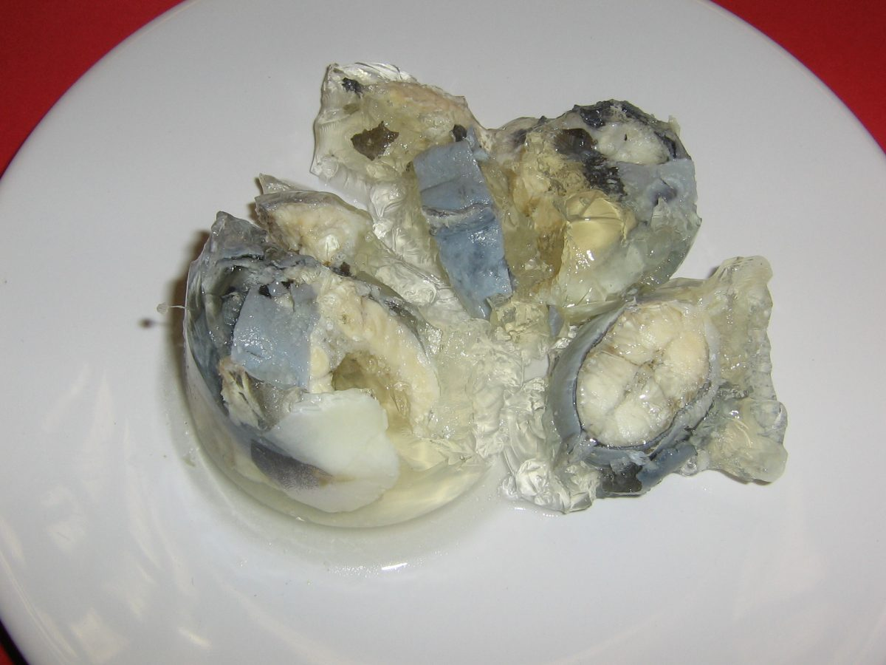

Jellied Eels

Description
A dish that brings me back to my days in 19th century London.
It is quite the delicious delight on a warm summer night.
Ingredients
- 900 g Skinned Eels
- Malt Vinegar
- 4 whole Cloves
- 3 Bay Leaves
- 8 Black Peppercorns
- 4 teaspoons Salt
- 1 Lemon (zest and juice)
- 1 small bunch of Curly Parsley
- Freshly ground White Pepper
- Brown Bread and Butter
Steps
- First, you need to prepare the eel. Using a sharp knife, cut the skin of the eel from the back of the head. Then, using fish pliers, pull away 2.5 cm of its skin.
- After skinning, lay the eel on the chopping board and cut off the head. Make a cut on the backbone, just above the lines of bones.
- Now, cut away the fillet. Keep the knife close to the bones.
- When the knife is close to the bones, hold the eel from another side and cut the fillet in a clean sweep. Repeat the same for the other side.
- Now cut the fillet into pieces of around 2.5cm in length diagonally.
- Then, take a large saucepan and add pieces with the ingredients, i.e., lemon juice, bay leaves, peppercorn, cloves, and salt.
- Pour cold water into the saucepan and bring this mixture to boil for about 20 minutes.
- Now, put the mixture in the bowl and cool it. After 10 minutes, stir it after adding parsley and chill it until the mixture is set.
- After the mixture is set and jelly is formed, it is ready to be served.